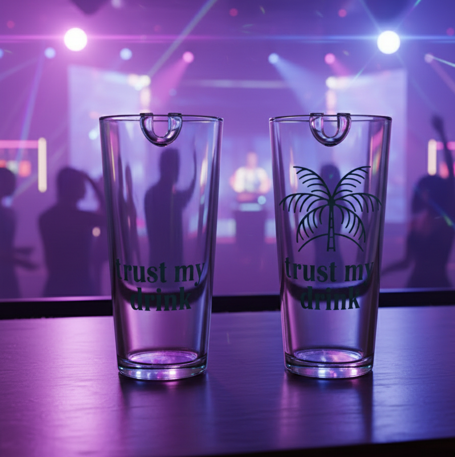

Trust My Drink répond à un problème réel de soumission chimique en milieu festif. Le test est intégré au verre pour rester simple, discret et compatible avec un usage en soirée.
*Outil de réduction des risques. Il complète la vigilance et ne remplace pas les consignes de sécurité.
Une bandelette détectrice est insérée dans le verre. Le système est intégré et hygiénique.
Un léger geste d'inclinaison active la détection pendant la consommation, sans action supplémentaire.
Si une substance est détectée, la bandelette change de couleur (exemple : transparent vers rouge).
Bandelettes externes, bracelets, faux ongles détecteurs ou couvercles demandent une action volontaire.
En soirée, les utilisateurs ne pensent pas à tester leur verre en permanence.
Trust My Drink intègre la sécurité dans le geste normal de boire.
Le signal visuel est simple à lire et adapté aux bars, festivals, boîtes et événements étudiants.
Important : la bandelette peut signaler des drogues fréquemment impliquées dans les agressions chimiques, comme le GHB, la kétamine ou la MDMA. Sans changement de couleur, la boisson est considérée comme sûre, mais le dispositif reste un outil de réduction des risques et non une garantie absolue.